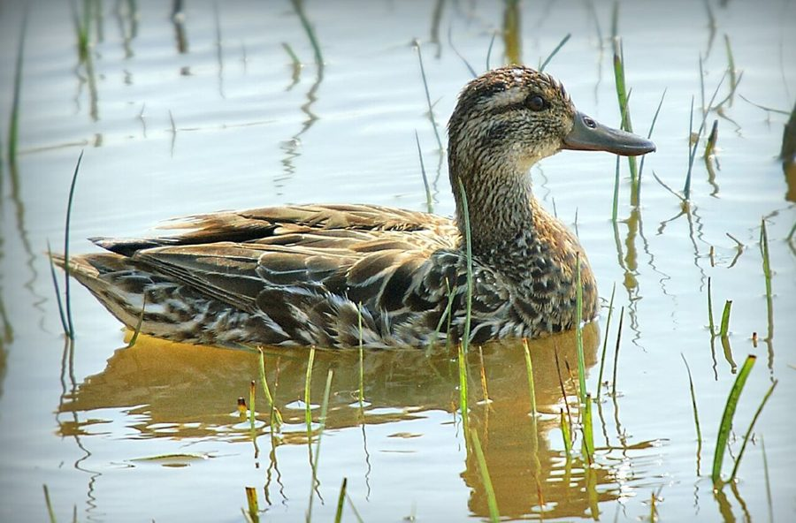

गार्गनी बत्तखGarganey
Spatula querquedula · Anatidae · BRD-0062

- Scientific name
- Spatula querquedula (Linnaeus, 1758)
- Family
- Anatidae
- Hindi
- गार्गनी बत्तख
- Status here
- native
- IUCN
- LC
When to look कब देखें
Expected mainly in October, November, December, January, February, March, April.
गार्गनी बत्तख / Garganey
Spatula querquedula (Linnaeus, 1758) — Anatidae
गार्गनी बत्तख (गार्गनी टील) — पूर्वी उत्तर प्रदेश के उथले जलाशयों, दलदली तालाबों और धान के खेतों में पाया जाने वाला एक छोटा, फुर्तीला और आकर्षक प्रवासी बत्तख है। यह पक्षी मुख्य रूप से एक 'मार्ग प्रवासी' (passage migrant) है, जो वसंत ऋतु (मार्च-अप्रैल) के दौरान मध्य एशिया और साइबेरिया की ओर वापस लौटते समय बहुत बड़ी संख्या में उत्तर प्रदेश के जलाशयों में दिखाई देता है, जबकि छोटी संख्या में यहाँ सर्दियों भर प्रवास करता है। वयस्क नर की सबसे बड़ी पहचान इसके चॉकलेट-भूरी गर्दन और सिर के ऊपर बनी एक चौड़ी सफ़ेद भौंह जैसी पट्टी (broad white supercilium stripe) है जो सिर के पीछे तक जाती है, तथा उड़ते समय इसके पंखों पर दिखाई देने वाला हल्का नीला-धूसर भाग (blue-grey wing-panel) है। मादा का रंग मटमैला भूरा होता है। यह बत्तख बेहद तेज़ गति से और झुंड बनाकर उड़ती है और किसी भी अन्य बत्तख की तुलना में सबसे लंबी दूरी (sub-Saharan Africa to Central Asia) तय करने के लिए जानी जाती है।
Quick Identification त्वरित पहचान
| Feature | Description |
|---|---|
| Size | Small duck (37–41 cm total length); slightly larger than the Common Teal |
| Male head | Rich chocolate-brown head with a bold, wide white stripe (eyebrow) curving from eye to nape |
| Male wing | Conspicuous blue-grey wing-panel (coverts) visible in flight and when resting |
| Female plumage | Cryptic mottled brown overall; pale throat; distinct dark stripe through the eye |
| Flight | Very fast and agile; flies in tight, coordinated flocks that twist and turn together |
| Bare Parts | Bill is straight, relatively long, and grey-black; legs and feet are grey-blue |
Field tip: Look on shallow, weed-covered village ponds in early spring (March). Look for small ducks in fast-moving flocks. The breeding males with chocolate heads and white curved eyebrows are very distinct. The male is shown in the field tip.
Morphology आकारिकी
Biometrics (typical measurements in the northern Indian plains showing seasonal and sexual size dimorphism):
| Feature | Measurement |
|---|---|
| Total length | 370–410 mm |
| Wing (Male) | 185–205 mm |
| Wing (Female) | 175–195 mm |
| Tail | 60–75 mm |
| Tarsus (Male) | 26–30 mm |
| Tarsus (Female) | 25–29 mm |
| Bill | 35–42 mm |
| Weight | 300–450 g |
Plumage: Breeding males have a brown head with fine white streaks. A broad white superciliary stripe runs from the front of the eye to the nape. The breast is brown with dark crescent markings, and the abdomen is white, bordered by grey vermiculated flanks. The long scapular feathers are black with white center lines. The wings have grey-blue coverts and a dull green speculum framed in white. Females are dull grey-brown, with a dark eye-stripe, white eyebrow, and a pale spot at the base of the bill.
Bare parts: The bill is narrow, straight, and blackish-grey. The irises are brown. The legs and webbed feet are blue-grey or dull grey.
Vocalisations
Males produce unique, mechanical clicking sounds during courtship and flight.
- Male call: A dry, crackling, rattle-like click, resembling a dry stick running along a comb: gerr-gerr or knerrr, produced in flight or when swimming in groups.
- Female call: A soft, high-pitched, thin quack: gah-gah-gah, repeated quickly when alarmed.
Behaviour & Ecology व्यवहार और पारिस्थितिकी
- Agile flight: Flies in tight, fast-moving flocks. The birds can take off almost vertically from the water surface, twisting and turning in unison.
- Foraging style: An omnivorous dabbler. It feeds by swimming with its bill submerged, skimming seeds, weeds, and small insects from the surface or muddy shallows.
- Long migration: It is a long-distance migrant, with some individuals breeding in Siberia and wintering in sub-Saharan Africa or South Asia, crossing high mountain ranges like the Himalayas.
Life Cycle / Phenology जीवन चक्र
- Breeding: Does not breed in Uttar Pradesh. They breed in temperate wetlands and wet grasslands of Europe, Siberia, and Central Asia from May to July.
- UP migration calendar: They arrive in UP in late October, but the majority are passage migrants seen in large numbers during spring migration from late February to April. They depart north by late April.
- Nesting in breeding range: Builds a neat nest of grass on dry ground close to water, lined with down.
Host Plants or Prey आहार
Primary food items:
- Plants: Seeds of water grasses, sedges, and submerged weeds, including hydrilla and duckweed.
- Insects: Aquatic beetles, bugs, midge larvae, and mosquito pupae gathered from weed mats.
- Other invertebrates: Small freshwater snails, worms, and tiny crustaceans.
Predators / Natural Enemies शत्रु
- Raptors: Western Marsh Harriers (Circus aeruginosus) and falcons prey on flying or feeding garganeys.
- Mammals: Jackals and feral dogs stalk them at muddy margins during the day.
- Human impact: Heavily targeted by poachers with nets and guns on large reservoirs during their spring passage.
Agricultural / Human Relevance कृषि प्रासंगिकता
Paddy field companion. During spring migration, Garganeys gather in flooded paddy fields, preying on insect larvae and weeds, which helps clean fields before spring sowing.
Conservation and legal status: Protected under Schedule IV of the Wildlife Protection Act, 1972. They are vulnerable to hunting pressure along their migration flyway and are threatened by the loss of shallow, vegetated wetlands in eastern UP.
Expected Locally स्थानीय रूप से अपेक्षित
Not a field record. Written from published accounts for eastern Uttar Pradesh. No confirmed local sighting yet — if you have seen it, that is what the atlas needs.
अभी तक स्थानीय पुष्टि नहीं। यह विवरण प्रकाशित स्रोतों से है, किसी अवलोकन से नहीं।
A common wader in Basti district, especially during the spring migration months of March and April. They are seen in large, active flocks on the shallow wetlands of the Harraiya and Basti blocks. They are often found feeding in flooded paddy fields during early morning hours.
Distribution वितरण
Global range: Breeds across temperate Europe and Asia; migrates south to winter in tropical Africa, South Asia, Southeast Asia, and southern China.
In India: A widespread passage migrant and winter visitor to all major wetlands and lakes.
In Uttar Pradesh: A regular passage migrant and winter visitor state-wide, especially numerous in spring.
In Basti district / eastern UP: Observed from October to April, with peak numbers recorded in March near large shallow waters.
Research Questions शोध प्रश्न
Anyone can investigate these | कोई भी इन प्रश्नों की जाँच कर सकता है
- Does the population count of Garganeys in Basti double during the spring migration (March-April) compared to winter (December)? — Conduct monthly count surveys.
- What is the frequency of male clicking calls during spring courtship displays in Basti's lakes? — Record and analyze audio recordings.
- Do Garganeys show a preference for feeding in shallow mudflats over deep water zones in local reservoirs? — Map feeding distributions.
- How do Garganeys and Common Teals interact when feeding in the same shallow paddy field? / एक ही धान के खेत में चरते समय गार्गनी बत्तख और छोटी बत्तख (Common Teal) के बीच क्या व्यवहार देखा जाता है? — Document interspecific competition.
- What date is the last Garganey recorded in Basti each spring? / हर साल वसंत ऋतु में बस्ती में अंतिम गार्गनी बत्तख किस तारीख को देखी जाती है? — Document departure dates.
Similar Species मिलती-जुलती प्रजातियाँ
| Species | Key Difference | हिंदी |
|---|---|---|
| Common Teal (Anas crecca) | Male has a dark green patch on a chestnut head; female is very similar but lacks the bold eye-stripes | छोटी बत्तख — हरे रंग का सिर, सफ़ेद भौंह का अभाव |
| Northern Pintail (Anas acuta) | Much larger; longer neck; male has chocolate head and long pin-tail; feeds in deeper water | पिनटेल बत्तख — बहुत बड़ा आकार, लंबी पूँछ, सुई जैसे पंख |
| Northern Shoveler (Spatula clypeata) | Much larger; massive spoon-shaped bill; male has green head and orange sides | चमचा चोंच — बहुत चौड़ी चोंच, बड़ा आकार |
Field rule: Small, teal-sized duck with a chocolate-brown head, a bold curved white stripe (eyebrow) behind the eye, and a fast, twisting flight in flocks is a Garganey.
Taxonomy & Classification वर्गीकरण
Original description. Carl Linnaeus described the Garganey as Anas querquedula in 1758 in his Systema Naturae (ed. 10, vol. 1, p. 126). The type locality was Sweden. Boie placed it in the genus Spatula in 1822. The genus name Spatula is Latin for a spoon, referencing the bill shape. The specific name querquedula comes from the Latin word for a small duck, which is an onomatopoeic reference to the male's call.
Subspecies. Monotypic — no subspecies are currently recognised.
Family and order placement. Placed in the order Anseriformes, family Anatidae, subfamily Anatinae (dabbling ducks).
Phylogenetic notes. Spatula querquedula is closely related to the shovelers within the genus Spatula, sharing similar feeding adaptations and wing-covert patterns.
IUCN status rationale. Listed as Least Concern (LC) due to its massive global range, though populations are slowly declining due to wetland loss and high hunting pressure along migration corridors.
Photo Gallery फोटो गैलरी
References संदर्भ
- Linnaeus, C. (1758). Systema Naturae. Tenth Edition. Holmiae, p. 126. [original description]
- Ali, S. & Ripley, S. D. (1999). Handbook of the Birds of India and Pakistan. Vol. 1. Oxford University Press, New Delhi.
- Grimmett, R., Inskipp, C. & Inskipp, T. (2011). Birds of the Indian Subcontinent. 2nd ed. Christopher Helm, London.
- Kear, J. (2005). Ducks, Geese and Swans. Oxford University Press, Oxford.
- BirdLife International (2024). Spatula querquedula. IUCN Red List of Threatened Species. Ver. 2024.
- GBIF Occurrence Data — Spatula querquedula, Uttar Pradesh (2010–2025).
Source file: species/fauna/birds/garganey.md